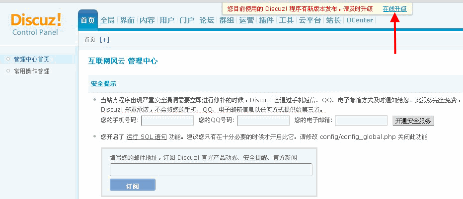

在线升级
论坛升级还是自动的好！自动升级支持网站无人操管“傻瓜式”升级，在方便站长的同时也大大增加了网站的安全性。
应用场景
虽然有的资深站长对版本升级轻车熟路，但是对于那些新手站长和不懂技术的站长来说，很容易文件上传错误，或者权限设置错误，升级总是失败。
用户需求
Discuz! 每次发布新版本时，官方论坛的安装使用区就会出现大量升级求助帖。站长希望能够以最简单、最便捷的方式来升级论坛，“一键傻瓜式”操作。
设计理念
让论坛升级不再“闹心”变的简单，一键操作即可完成升级。
功能使用
在论坛有新版本时，站长在后台可以看到升级提示：并且旁边有“在线升级”的链接，点击即可进入自动升级的流程。不过要注意一点，升级前必须先关闭站点。具体操作步骤如下：
1、当官方发布升级补丁后，站长登录后台可以看到升级提示：
点击“在线升级”会自动跳转到升级面页
2、系统会自动列出可升级的程序包，站长选择后可点击【自动升级】按钮，开始升级，如果您不想自动升级，可以选择【手动下载】下载。
3、升级的过程中会弹出提示框，提醒站长备份程序和数据库。
4、升级时还需要先关闭站点。
5、站长备份数据库并关闭站点后，会出现更新的文件列表同时列出下载的文件存放路径，说明本次版本升级会影响到哪些文件。
6、点击【下载更新】后开始进行文件下载，一个一个文件进行下载，显示进度及正在下载的文件名，下载过程为全自动，您只要耐心等待就可以。
7、下载完成后进行文件对比，下载的文件与网站的文件进行对比。
小版本升级中，如果网站有模板修改，对比过程中可以跳过修改过的模板（不出现在差异化中） 状态为: [正常] 的文件与官方标准版一致 状态为：[差异] 的文件有手动修改或安装插件修改的文件 如果检测到全部正常 则提供在线升级 直接进行第九步 如果检测到有差异文件 则要提示站长是否强制升级，强制升级会覆盖原文件
把差异性文件进行自动备份在目录 ./data/back/下的文件夹中，含目录结构
9、对比完成后，点击【正常升级】开始升级。
10、升级过程为自动，您只要耐心等待就可以了。
11、请确认是否要恢复默认风格，如果选择“是”您的站点将恢复站点默认风格。然后将自动更新缓存，等待缓存更新完毕后，站点升级完成。